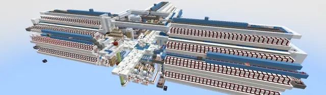
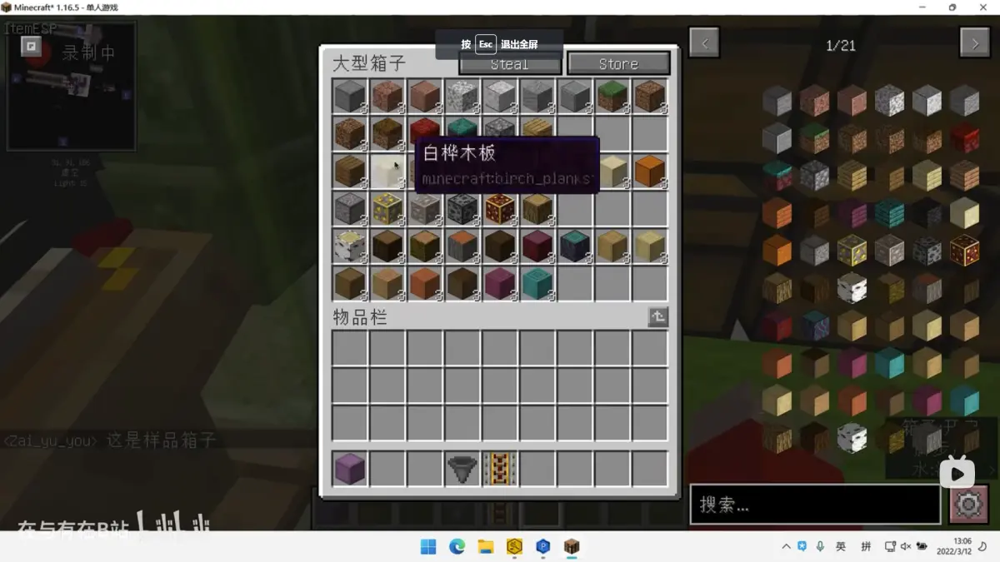
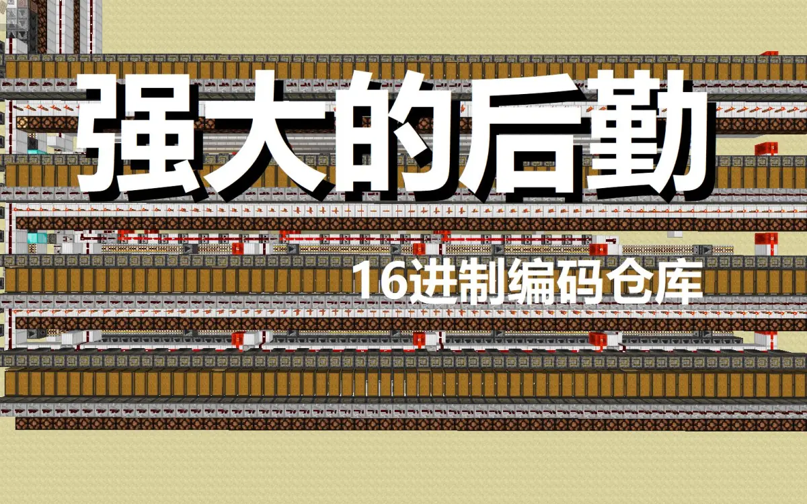
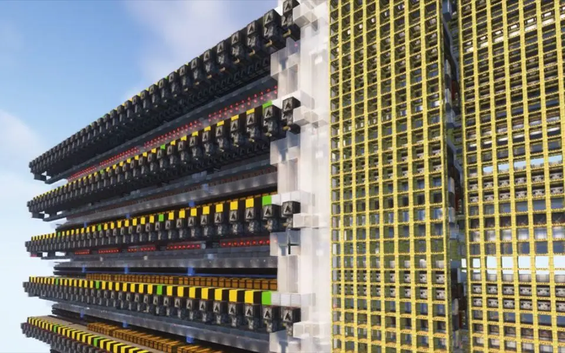

写在前面
本文为作者不负责任的猜想，仅具有部分指导意义。大部分猜想基于现在已有的全物品设计、编码全物品设计及编码仓库的设计上思考的
本文所有 粉色字 均为链接，为对本文内容的补充
本文是由我和天火的服务器成员 @Maple_枫溪 共同讨论的
（这里打一波广告，天火服务器交流群：1029028772）
目录
7、全物品的尽头与大型垃圾桶的迭代
7.1、全物品的发展窘况
7.2、可能的优化手段
7.2.1、增向
7.2.2、多箱全物品单片
7.2.3、适当嵌入多物品
7.2.4、编码全物品
7.2.5、离线分类全物品
7.3、全物品的尽头
7.4、大型编码仓库
7.5、大型仓库的发展前提
7.6、大型仓库的设计
7.1、全物品的发展窘况
显而易见的，mojang在持之以恒地大量添加着新种类的物品。尤其是1.16以来每次都进行了一次群系更新，为了营造环境氛围加入了大量的同质材料（就方块性质来说）。这导致1.16设计时加入了全物品裕度收到了严苛的挑战，大部分的全物品设计都需要拆开水道并加装新的全物品单片
以1.16为例，常见的有单侧32片左右，此时已占据了两个区块大小。随着物品种类愈发地增多，传统的三向全物品寻找物品将会需要玩家走三个甚至更多数量的区块，这会大大增加全物品的体积、劣化使用体验、增加常加载范围、增加物品在水道内的时间
你可能说过多的物品种类会造成冗余，是沙盒游戏的忌讳。但你可以参考泰拉瑞亚，也同为沙盒游戏，物品种类远多于mc，证明mc的物品种类远远尚未达到沙盒游戏的上限
------------------------------
7.2、可能的优化手段
传统全物品的潜力尚未完全压榨。在真正走到尽头之前，还有一些补救的手段
7.2.1、增向
如果物品分流到三向会导致单一的一个向过长，那么就可以适当增加向数，将物品分流到四向甚至五向就可以大幅降低单侧长度。但物品数量不断增加，这个方案也将有个上限
现有的三向全物品是在玩家使用体验（过多的向会影响玩家的方向感）和全物品设计中一个较为舒适的平衡，贸然增加向会降低玩家的使用体验。增向对于建筑师的设计提出了较高的要求，需要通过简单的装饰来让玩家轻易地分辨出对应的分区
7.2.2、多箱全物品单片
目前常见的全物品单片为单侧五箱全物品单片，倘若达到单侧六箱，单向长度就可以缩减到六分之五。再进一步呢？七箱、八箱就可以让全物品的单向长度进一步缩小
7.2.3、适当嵌入多物品
多物品可以让一个箱子分类54种物品，契合了全物品垃圾桶的定位，即少量多种物品。如将部分箱子、水道与多物品绑定，即可达到传统全物品达不到的物品密度。现有的如轻量全物品是一种较为成熟的方案，可以提供参考
7.2.4、编码全物品
编码全物品可以将不同种物品编码进同一个箱子来达到种类相近的物品的合并分类，近似于多物品的效果，同时物品密度可以更高，可以将少量同种物品堆在数个箱子内，大量节约了箱子数量
如今编码全物品相对传统全物品较为新颖，研究的人尚少，其潜力还有待被压榨
7.2.5、离线分类全物品
@Maple_枫溪 提出了离线全物品的概念
如果较长的全物品会让物品在更长的水道内滞留更长的时间，增加卡顿和卡顿时间的话，在玩家较少时采用离线分类就可以免除动态卡顿带来的问题了
如在玩家较少的凌晨时间定时让假人加载并启动全物品释放白天缓存的物品进行分类，可以让玩家在白天只需要背负全物品的静态卡顿甚至可以完全卸载全物品，大幅优化了全物品在服务器的使用体验，是一种可以努力的研究方向
这种全物品已有传统的锁漏斗全物品作为较为成熟的方案进行背板，只需额外添置缓存和对主控进行较小的改动。由于不需要考虑分类时玩家的游戏体验，可以考虑采用大吸力单片去压榨全物品单片的缓存
------------------------------
7.3、全物品的尽头
全物品自动分类机，其优势在于玩家在一个相对固定的位置可以通过展示方块或展示框来快速让玩家确定目标物品的所在地，来快速便捷地取用物品。当展示方块离全物品中心超过两个区块甚至超出了方块实体的渲染范围时，展示框内物品不再渲染，玩家是否还能便捷地找到展示方块呢？
同时取用物品走过的较长的路程也会导致玩家地游戏体验大幅降低，这个时候全物品的友善的玩家交互的优势不再，而其附加的劣化的仓库属性也暴露无遗
现在，编码全物品、编码仓库也可以完成非常多种类的物品的分类，传统全物品其垃圾桶属性渐渐不再突出。而传统全物品天生自带了劣化的仓库属性：只进不出、没有满箱检测、对溢出物品处理不到位。这导致了传统全物品对于后勤和运维并不友好，而且其仓库属性并不能和配套的物品处理设施，如炼药机、合成站（如补货）、熔炉组（如补充燃料）进行合理的联动
当交互的优势不再之时，我们是否应该把眼光放向别的东西呢？
------------------------------
7.4、大型编码仓库
大型编码仓库包含了交互界面和仓库两部分，拥有完整的仓库功能，即可进可出。但由于交互界面较小，基本为一个传统的展示板范围，所以交互体验目前不如传统全物品

样品检索的预填充箱子，截自 @在与有在B站《“创造模式物品栏”》
但目前大型编码仓库的交互界面已经发展到利用样品完成检索的方案，一个预先填充好样品的大箱子即可等效于分类54种物品，在交互界面上只需1b或2b，大大降低了玩家寻找物品需要走的路。一个解释用的告示牌或展示框里的命名物品，或者玩家自带的样品都可以快速完成检索。而随着物品数量增加，传统全物品逐渐吃力的物品展示在样品检索这里却没有明显增加的压力
而且由于仓库的性质，不需要像全物品一样需要按向展开，可以支持密堆，大幅降低了常加载区块数量。单一物品的储量更多，让仓库在面对大量同种物品时更加从容。仓库单片也可以更方便地检测储量，让运维成本更低
由于可进可出的性质，让仓库的存货可以便捷地接入其他设备，如炼药机、熔炉组，甚至可以接入合成树，如sac的圣杯及其劣化版本
同时编码仓库在物品解码完成后，只需解锁该物品的漏斗，相对来说动态卡顿更有优势
------------------------------
7.5、大型仓库的设计前提
如果物品到达玩家手里的时间要远大于玩家主动去仓库或者全物品取物品的速度的话，编码仓库的使用体验就较差了。在一些较长的位置嵌入伪展或者无延迟投掷器链加速，可以大幅改善玩家体验。尤其是目前编码仓库没有实现多线程取物品的情况下，多个玩家同时使用的时候需要尽可能压缩单一玩家的使用时间
以样品检索为例，如果玩家需要找较为冷门的物品或可被归纳的种类较多的物品时，亦或是未被收录的物品，可能寻找起来较为吃力，需要不断地开关箱子。je有一种mod，可以在玩家不打开箱子时可以预览箱子内的物品，可以让玩家极为方便地预览仓库收录的物品
所以目前来看，大型仓库需要高速物品传输技术发展。而箱内物品预览可以大幅提高玩家的使用体验
------------------------------
7.6、大型仓库的设计
@LonganRG《潜影盒物品搜索引擎》
【MC智能仓储】潜影盒物品搜索引擎（带满箱潜影盒计数器）功能展示 B 站视频 »我在b站能找到的能通过样品来进行分类取物品的第一个机器
@redberd小红《第一代16进制编码仓库》

【存储科技】第一代16进制编码仓库 | 不必开创造玩生存，直接开生存玩创造 B 站视频 »b站编码仓库的老祖宗
@CCS_Covenant《物品解码器》
Minecraft信息化物流时代(1):物品解码器 B 站视频 »@在与有在B站《“创造模式物品栏”的先导介绍视频》

【终极存储科技】“创造模式物品栏”的先导介绍视频 B 站视频 »一个非常接近预想的设计目标的仓库
@SAC_Official《单线程编码全物品》
SAC的单线程编码全物品 B 站专栏 »一个相对完善的编码全物品
利用编码全物品的输入物品处理和物品编码，利用传统的编码仓库作为主体，利用样品进行物品提取甚至余量提示
在此基础上可以配合sac的圣杯，在可合成物品余量不足时输出其原材料作为替代
样品编码可以采用ccs的流水线编码（压缩单个玩家的取货速度）或者盒子编码（避免矿车消失bug）
可以采用多线程解码，增加多玩家使用或者多物品提取的体验
写在最后（作者的碎碎念）
这篇文章是在今天与 @Maple_枫溪 讨论离线全物品的时候突然想到的
当物品数量不断增加时，多物品全物品已然逼近上限，而传统全物品也有一个上限
达到这个上限后，能接着使用的机器只有编码仓库了。而编码仓库的发展路线，似乎《创造模式物品栏》和《一个仓库的需求》已经为我们指出了一条路